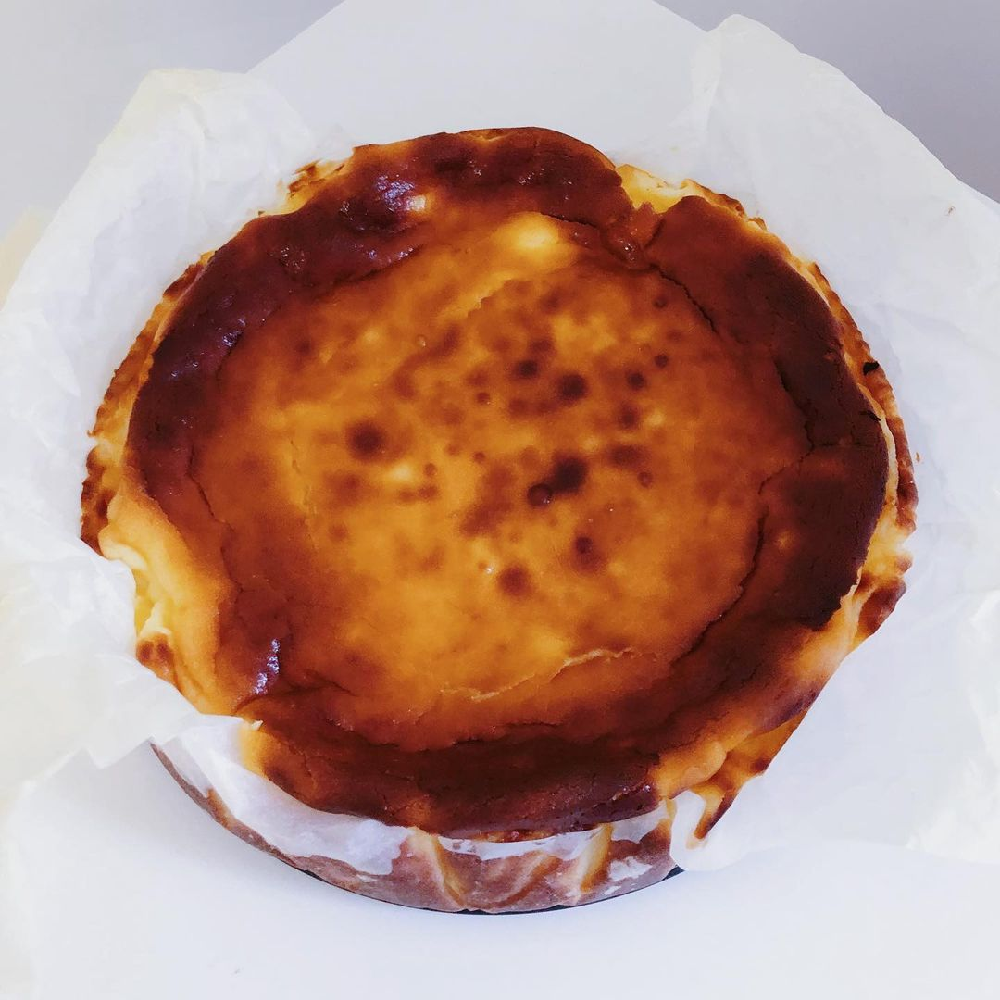

La Viña Cheescake

La Viña is a mitic basque bar in Donosti. It is very famous for their cheeascake, which is done in the oven.
For preparing this super cake, you will need the following
- 200gr of cheese, the one you like the most, I use Philadelphia
- 6 eggs
- 200ml of cream
- 100gr of sugar
Once you have it all, it is very easy, just:
- Preheat the ovet at 200 degrees Celsius
- Mix the eggs
- Add the cheese and keep mixing
- Add cream and sugar and keep mixing
- Pour the mixture into a mould and bake it for 30 minutes in the over
- Leave it until it's at room temperatura
- Eat and ejoy the best cheesecake of the world!!
THANK YOU ALL!!